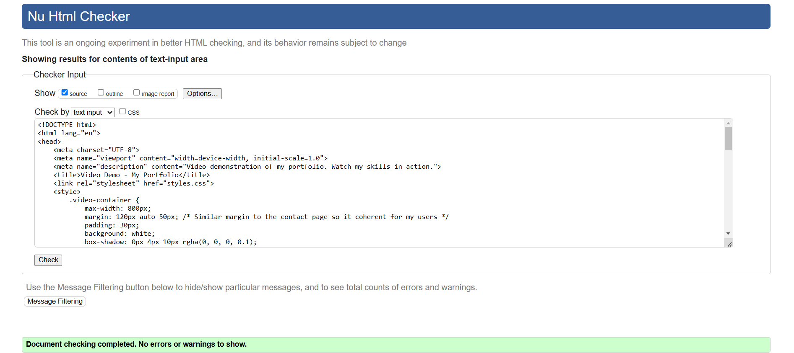

Reflection Report on Web Development Journey
Introduction
My journey in web development has been both challenging and rewarding. Initially, I had a basic
understanding of HTML and CSS, but this project pushed me to apply my knowledge in a structured way while
also exploring Git/GitHub for version control. Throughout the development of my portfolio website, I
encountered several challenges, particularly in designing a responsive layout, debugging CSS issues, and
managing my project files effectively using Git/GitHub. However, these obstacles became valuable learning
experiences that improved my problem-solving skills and reinforced my understanding of front-end web
development.
Challenges Faced & Solutions Implemented and how I Implemented HTML & CSS for Responsive Web Design
One of the most difficult issues I had was ensuring that my website responded correctly to various screen sizes. Initially, the layout appeared to be broken on smaller displays, with parts overlapping or misplaced. Navigation links were difficult to find on mobile devices, photos did not resize properly, and certain areas of text were either too large or too small, making it difficult to read.
To overcome these challenges, I used CSS Grid and Flexbox to build a more structured and adaptable layout. CSS Grid enabled me to create flexible column and row structures, allowing different areas of the website to be changed automatically based on screen width. Flexbox was especially useful for aligning things within containers, making sure that elements like buttons, pictures,and text blocks remained properly positioned across different resolutions.
In addition, I utilised media queries to customise the design for different device sizes. Setting breakpoints at popular screen dimensions (e.g., max-width: 1024px for tablets and max-width: 768px for mobile phones) allowed me to change font sizes, paddings, and margins, and even reorganise the layout as needed. To improve readability and user experience, I reduced multi-column parts to a single-column format on smaller screen sizes.
To evaluate responsiveness, I used browser developer tools like Chrome DevTools, which allowed me to see how the site would appear on various screen sizes. By finding variations and applying real-time CSS tweaks, I was able to iterate and improve the layout.
All these strategies enabled me to create a fully flexible and adaptable design that provides an easy browsing experience on computers, tablets, and mobile devices. Users may now quickly explore the website, since all elements adjust to their screen size without distortion or layout concerns.
Experimenting & Adding Interactive Features
During our lab sessions, our instructor encouraged us to experiment with various HTML and CSS properties to better understand their impact. I took this method by adding an icon button on the right side of my page. The icon was initially misplaced, appearing in the middle and then half concealed at the screen's edge. After viewing tutorial videos and reading material, I used CSS positioning techniques (absolute and relative positioning) to make it responsive to multiple devices.
Debugging CSS & UI Consistency
Another problem was making sure my website appeared visually appealing and consistent across all browsers. There were issues with margins, padding, and font sizes, resulting in misaligned parts. I used browser developer tools to evaluate items and detect stylistic problems. In addition, I also used web tools such as MDN Web Docs and W3Schools to properly resolve CSS difficulties.
Managing Files & Version Control with Git/GitHub
At first, I struggled with managing my project files efficiently and keeping track of changes. Committing frequently and using Git branches helped me work on different features without breaking the main project. By posting updates to GitHub on a regular basis, I was able to keep my project organised and track my progress more effectively.
Changemaker & Employability Skills
This project helped me improve my critical thinking and problem-solving abilities, particularly while fixing errors and enhancing my design. It also emphasised the significance of attention to detail, particularly when developing clean and maintainable code. Furthermore, working with peers and seeking feedback improved my ability to analyse my work and make informed design decisions.
Design Decisions & Inspiration
I aimed for a modern, clean style to ensure readability and usage. My colour scheme was influenced by minimalist site designs that value simplicity and user experience. I referred to Dribbble and Behance for UI/UX inspiration and incorporated interactive elements, such as hover effects, to increase user engagement. The fonts were selected for clarity and accessibility, ensuring a professional appearance.
Validation Reports & Testing
To ensure my code met assignment requirements standards, I validated my HTML and CSS using W3C validation tools. Screenshots
of the validation reports are included in this document, demonstrating that my code is error-free and
follows best practices.

Conclusion
This project was an excellent educational opportunity that helped me improve my knowledge of HTML, CSS,JAVASCRIPT and Git/GitHub management. The problems I had, such as troubleshooting layout flaws and guaranteeing responsiveness, taught me crucial problem-solving abilities that would be useful in future web development projects. I successfully constructed a functioning and responsive portfolio website by experimenting with coding, incorporating input from my instructor and classmates, and utilising available resources.
This assignment has substantially increased my confidence in web programming, and I now feel more prepared to take on larger tasks. Moving forward, I are interested in broadening my skills by learning JavaScript and researching advanced CSS techniques to improve interactivity and user experience. Overall, this project has confirmed my interest in web development, and I am forward to continue growing in this field.
Refrence
Code with Faraz - Best Front-End Components and Blogs. (2023). 10+ eCommerce Websites with HTML, CSS, and JavaScript. [online] Available at: https://www.codewithfaraz.com/article/101/10-ecommerce-websites-with-html-css-and-javascript.[Accessed 10 Mar. 2025].
Coyier, C. (2018). A Complete Guide to Flexbox | CSS-Tricks. [online] CSS-Tricks. Available at: https://css-tricks.com/snippets/css/a-guide-to-flexbox/. [Accessed 14 Feb. 2025].
CSS-Tricks. (2020). Gap | CSS-Tricks. [online] Available at: https://css-tricks.com/almanac/properties/g/gap/ [Accessed 23 Feb. 2025].
CSS-Tricks. (2020). Gap | CSS-Tricks. [online] Available at: https://css-tricks.com/almanac/properties/g/gap/ [Accessed 23 Feb. 2025].
dan (2014). CSS Media Queries for the Divi Theme - Divi Booster. [online] Divi Booster. Available at: https://divibooster.com/css-media-queries-for-the-divi-theme/ [Accessed 23 Feb. 2025].
developer.mozilla.org. (n.d.). Aligning items in a flex container - CSS: Cascading Style Sheets | MDN. [online] Available at:https://developer.mozilla.org/en-US/docs/Web/CSS/CSS_Flexible_Box_Layout/Aligning_Items_in_a_Flex_Container.[Accessed 23 Feb. 2025].
developer.mozilla.org. (n.d.). box-shadow - CSS: Cascading Style Sheets | MDN. [online] Available at: https://developer.mozilla.org/en-US/docs/Web/CSS/box-shadow. [Accessed 26 Feb. 2025].
developer.mozilla.org. (n.d.). flex-direction - CSS: Cascading Style Sheets | MDN. [online] Available at: https://developer.mozilla.org/en-US/docs/Web/CSS/flex-direction.
developer.mozilla.org. (n.d.). flex-wrap - CSS: Cascading Style Sheets | MDN. [online] Available at: https://developer.mozilla.org/en-US/docs/Web/CSS/flex-wrap.[Accessed 6 Mar . 2025].
developer.mozilla.org. (n.d.). grid-template-columns - CSS: Cascading Style Sheets | MDN. [online] Available at: https://developer.mozilla.org/en-US/docs/Web/CSS/grid-template-columns..[Accessed 14 Mar. 2025].
Elementor. (2023). CSS & HTML Colors: Properties, Codes, Keywords And Names. [online] Available at: https://elementor.com/blog/colors-in-css/. [Accessed 02 Mar . 2025].
Embrey, L. (2021). 10+ Hamburger Menu Examples [CSS Only]. [online] Alvaro Trigo’s Blog - Web developing and design. Available at: https://alvarotrigo.com/blog/hamburger-menu-css/.[Accessed 18 Feb. 2025].
Emmanuel, O. (2017). Understanding Flexbox: Everything you need to know - We’ve moved to freeCodeCamp.org/news - Medium. [online] Medium. Available at: https://medium.com/free-code-camp/understanding-flexbox-everything-you-need-to-know-b4013d4dc9af [Accessed 23 Feb. 2025].
Freebie Supply. (2018). 25+ CSS & JS Sliders From CodePen 2018 - Freebie Supply. [online] Available at: https://freebiesupply.com/blog/css-js-sliders-from-codepen/ [Accessed 23 Feb. 2025].
freeCodeCamp.org (2019). Display mobile responsive menu on a larger browser width. [online] The freeCodeCamp Forum. Available at: https://forum.freecodecamp.org/t/display-mobile-responsive-menu-on-a-larger-browser-width/319206/4 [Accessed 19 Feb. 2025].
freeCodeCamp.org (2022). Flex Containers. [online] The freeCodeCamp Forum. Available at: https://forum.freecodecamp.org/t/flex-containers/516098 [Accessed 23 Feb. 2025].
Github.com. (2025). Blocked. [online] Available at: https://github.com/citation-style-language/csl-editor/blob/master/css/base.css?bust= [Accessed 23 Feb. 2025].
Hess, J. (2015). Close Slide Out Menu when option is selected. [online] Stack Overflow. Available at: https://stackoverflow.com/questions/30564169/close-slide-out-menu-when-option-is-selected.[Accessed 13 Feb. 2025].
Huggingface.co. (2025). smirki/UI_Reasoning_Dataset · Datasets at Hugging Face. [online] Available at: https://huggingface.co/datasets/smirki/UI_Reasoning_Dataset/viewer/default/train [Accessed 14 Mar. 2025].
Ishika Maurya (2024). Portfolio Website code using Html, CSS and Javascript. [online] Medium. Available at: https://medium.com/@mauryaishika100/portfolio-website-code-using-html-css-and-javascript-f5e1a2343038 [Accessed 23 Feb. 2025].
Jite-Orimiono, O. (2025). Styling with the CSS box-shadow property - LogRocket Blog. [online] LogRocket Blog. Available at: https://blog.logrocket.com/box-shadow-css/ [Accessed 23 Feb. 2025].
Jite-Orimiono, O. (2025). Styling with the CSS box-shadow property - LogRocket Blog. [online] LogRocket Blog. Available at: https://blog.logrocket.com/box-shadow-css/ [Accessed 23 Feb. 2025].
Mishkahu.com. (2025). Available at: https://mishkahu.com/wp-content/themes/eduma/assets/less/reset-style.less [Accessed 16 Feb. 2025].
Nefe Emadamerho-Atori (2024). CSS Hover Effects: 40 Engaging Animations To Try. [online] Prismic.io. Available at: https://prismic.io/blog/css-hover-effects. [Accessed 04 Mar . 2025].
Shecodes.io. (2025). [HTML] - How to change font size and color in HTML? [online] Available at: https://www.shecodes.io/athena/62062-how-to-change-font-size-and-color-in-html [Accessed 23 Feb. 2025].
Shecodes.io. (2025). Coding Workshops for Women. [online] Available at: https://www.shecodes.io/palettes [Accessed 23 Feb. 2025].
streetsoldier (2014). Change hover color on a button with Bootstrap customization. [online] Stack Overflow. Available at: https://stackoverflow.com/questions/25923623/change-hover-color-on-a-button-with-bootstrap-customization. [Accessed 10 Mar. 2025].
w3schools (2019). How To Create a Side Navigation Menu. [online] W3schools.com. Available at: https://www.w3schools.com/howto/howto_js_sidenav.asp.[Accessed 12 Feb. 2025].
W3schools (2019). Responsive Web Design Media Queries. [online] W3schools.com. Available at: https://www.w3schools.com/css/css_rwd_mediaqueries.asp. [Accessed 5 Mar. 2025].
www.w3schools.com. (n.d.). How To Create a Collapsed Sidebar. [online] Available at: https://www.w3schools.com/howto/howto_js_collapse_sidebar.asp. .[Accessed 15 Mar. 2025]. [Original source: https://studycrumb.com/alphabetizer]